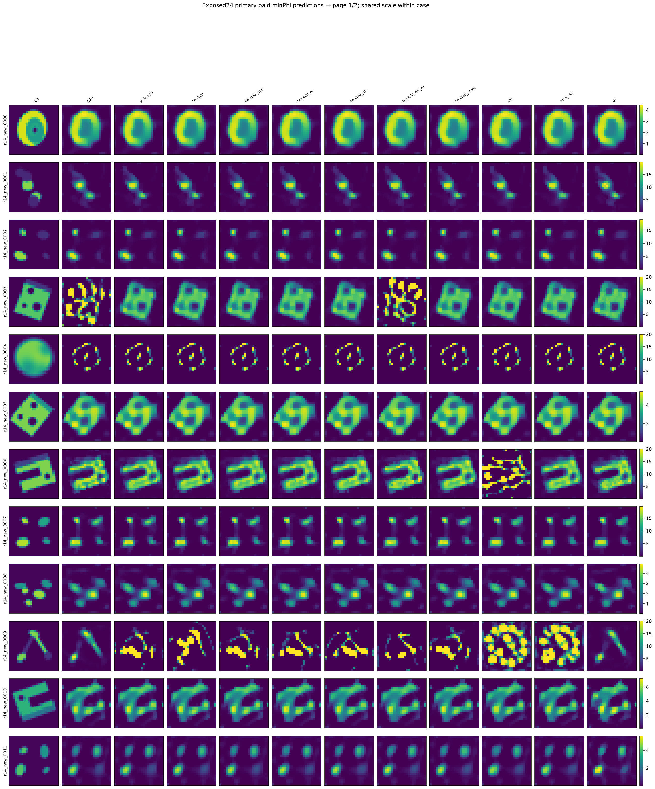
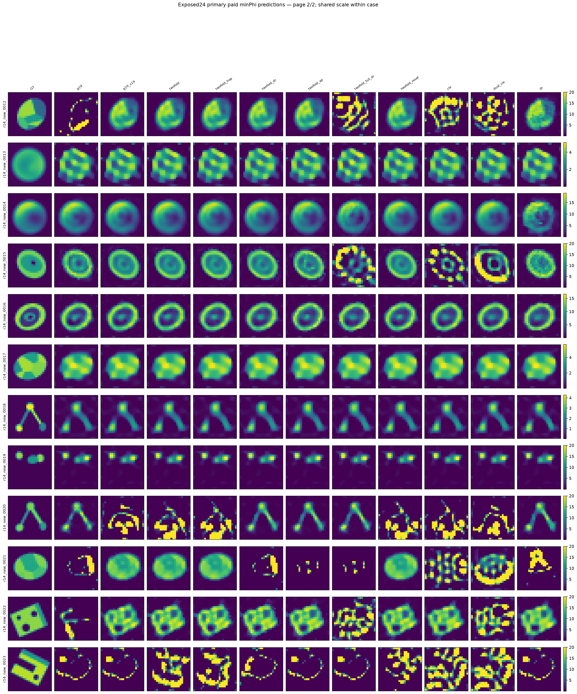
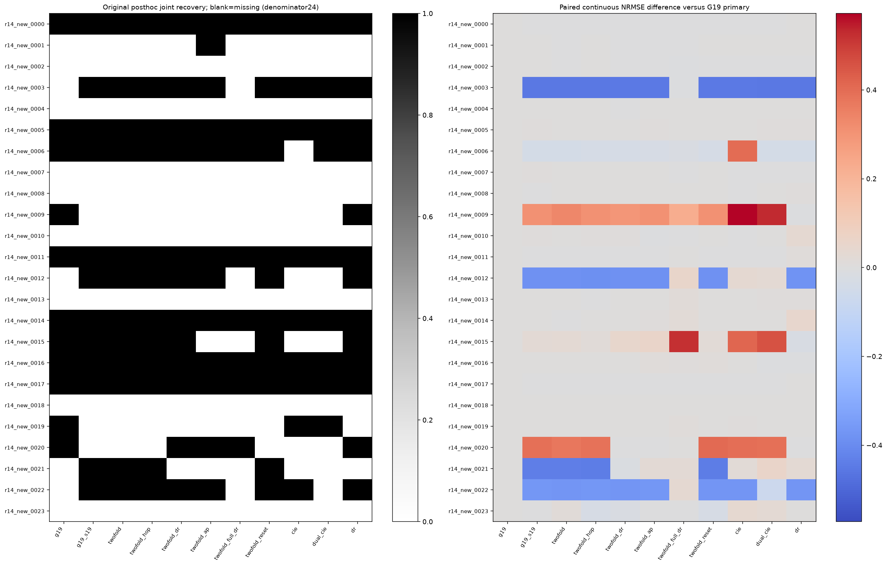
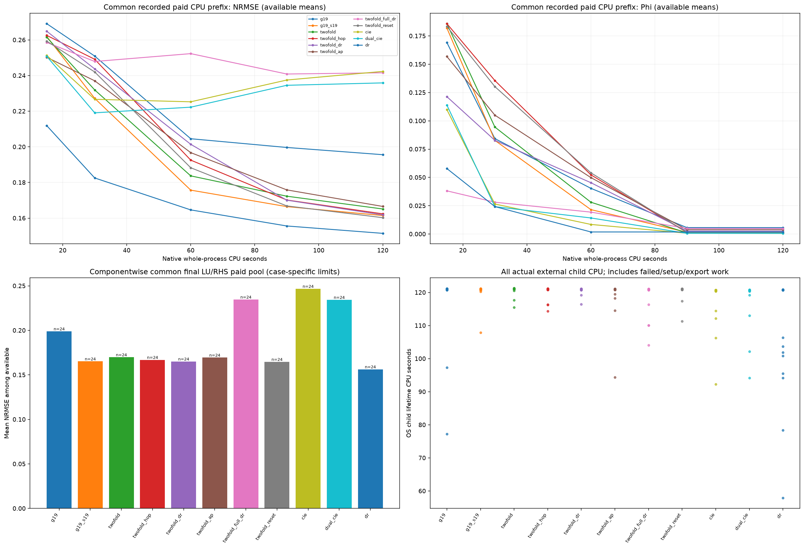
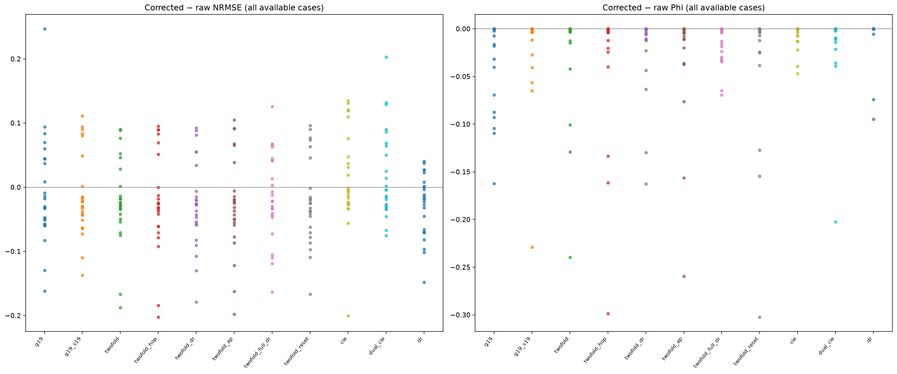
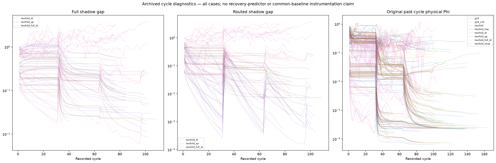

R15 exposed24: 24 ×11 fixed methods
All methods and failures retained. Original descriptive thresholds do not select candidates. Scientific conclusions reserved for parent.
{
"status": "COMPLETE",
"campaign": "twofold_exposed24_v1",
"seal": "/Volumes/migodam's-external-brain/Research/Inv_SLAM/research/delegated/max_struct_r1/r14_worktree/research/research_max_struct_r15/predictions/PREDICTION_SEAL_MAIN_APPROVED_V1.json",
"expected_cases": 24,
"expected_tasks": 264,
"methods": [
"g19",
"g19_s19",
"twofold",
"twofold_hop",
"twofold_dr",
"twofold_ap",
"twofold_full_dr",
"twofold_reset",
"cie",
"dual_cie",
"dr"
],
"primary_rows": 264,
"full24_matrix_rows": 24,
"issues": 0,
"truth_access": "ONLY_AFTER_NEW_PARENT_AUTHORIZED_PREDICTION_SEAL",
"material_metrics_source": "/Volumes/migodam's-external-brain/Research/Inv_SLAM/research/delegated/max_struct_r1/r14_worktree/research/research_max_struct_r14/runtime/scoring_history/src/score_results.py",
"success_rule": "Inherited posthoc NRMSE<=.15 and fixed chi>1 IoU>=.70; not candidate selection",
"selection_rule": "Inherited completed paid legal/eligible original Phi; secondary minR in originalCN99, primary fallback explicitly retained",
"normalization": "Saved native CPU prefixes, shared CPU cutoff, componentwise minima of final physical LU/RHS across all11 same-case arms. Full actual costs remain charged; no reruns or free auxiliary operations.",
"external_final_task_attempt_CPU_total": 31372.375,
"external_final_task_attempt_CPU_measured_subtotal": 31372.375,
"external_CPU_missing_tasks": [],
"stratification": "Frozen manifest observation_contract labels: receiver full/half, sources6/12, noise.01/.02, matched/crossgrid, plus joint labels. Coupled physical axes; exposed-cohort posthoc descriptions, not independent causal effects.",
"fixed_primary_bootstrap": "Seven prelisted candidate-reference pairs; material-object clusters24, seed20261116,4000 shared draws; paired mean/median NRMSE delta percentile95 descriptive intervals, no p-values/significance-win claims.",
"all_queue_attempts_cost_scope": "All launch/process attempts retained in ALL_QUEUE_ATTEMPTS; repeated queue snapshots may overlap. Final-task totals do not assert an all-attempt total when multiple receipts supplied.",
"figures": [
{
"path": "FIGURES/materials_page1.png",
"bytes": 339584
},
{
"path": "FIGURES/materials_page1.pdf",
"bytes": 295156
},
{
"path": "FIGURES/materials_page2.png",
"bytes": 364724
},
{
"path": "FIGURES/materials_page2.pdf",
"bytes": 307715
},
{
"path": "FIGURES/paired_recovery_and_nrmse.png",
"bytes": 151656
},
{
"path": "FIGURES/paired_recovery_and_nrmse.pdf",
"bytes": 38450
},
{
"path": "FIGURES/cpu_and_componentwise_physics_prefixes.png",
"bytes": 426766
},
{
"path": "FIGURES/cpu_and_componentwise_physics_prefixes.pdf",
"bytes": 39372
},
{
"path": "FIGURES/corrector_help_and_harm.png",
"bytes": 149584
},
{
"path": "FIGURES/corrector_help_and_harm.pdf",
"bytes": 28227
},
{
"path": "FIGURES/cycle_shadow_gaps_and_paid_phi.png",
"bytes": 1102645
},
{
"path": "FIGURES/cycle_shadow_gaps_and_paid_phi.pdf",
"bytes": 211407
}
],
"science_interpretation": "Parent only; exposed cohort, no new blind confirmation or population inference",
"new_physics": 0,
"new_optimizations": 0,
"new_SVD": 0,
"CPU_seconds": 14.557581,
"wall_seconds": 15.92214170889929
}ALL_QUEUE_ATTEMPTS.csv
ALL_VIEWS.csv
COMMON_CPU_PREFIXES.csv
COMMON_FINAL_LU_RHS_POOL.csv
COMMON_LU_RHS_PREFIXES.csv
CORRECTOR_EFFECTS.csv
COST_LEDGER.csv
CYCLE_DIAGNOSTICS.csv
DYNAMICS_SUMMARY.csv
FIXED_PRIMARY_CLUSTER_BOOTSTRAP.csv
FIXED_PRIMARY_PAIRED_VALUES.csv
ISSUES.csv
NORMALIZED_GAIN_LOSS.csv
NORMALIZED_PAIRED_DIFFERENCES.csv
PAID_CPU_PREFIXES.csv
PAIRED_DIFFERENCES.csv
PRIMARY_MATRIX24.csv
PRIMARY_TASKS264.csv
QUEUE_COSTS.csv
RECOVERY_GAIN_LOSS.csv
SELECTOR_AUDIT.csv
STRATA_MEMBERSHIP.csv
STRATIFIED_PAIRED_GAIN_LOSS.csv
STRATIFIED_SUMMARY.csv
SUMMARY.csv
TRUTH_SOURCES.csv

FIGURES/materials_page1.png
FIGURES/materials_page2.png
FIGURES/paired_recovery_and_nrmse.png
FIGURES/cpu_and_componentwise_physics_prefixes.png
FIGURES/corrector_help_and_harm.png
FIGURES/cycle_shadow_gaps_and_paid_phi.png